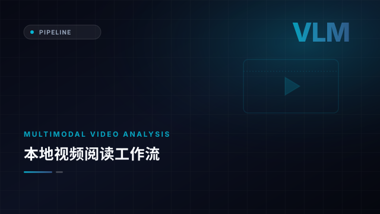

本地视频阅读工作流：从镜头切分到端侧多模态理解
让 8GB 显存电脑读懂长视频，不能靠每秒硬抽帧喂给大模型。本文记录一套轻量化本地流水线：先用 PySceneDetect 切分镜头筛出关键帧，配合 faster-whisper 离线转写语音，再由 Qwen2.5-VL 识别画面内容并建立检索索引。

性能瓶颈：逐秒抽帧带来的冗余与显存压力
用视觉大模型分析长视频教程或技术录屏时，如果每隔一秒抽一帧直接送进模型，大量静止画面会白白消耗显存和算力，而真正关键的翻页、切换镜头却可能刚好卡在采样间隙里被漏掉。
在只有 8GB 显存的家用显卡上，更省资源的做法是把“粗筛画面”和“读懂内容”拆开：先用轻量级传统视觉算法挑出有变化的画面，再把少量关键帧交给多模态小模型解读。
方案：传统视觉分段 + 端侧模型读帧
- 传统算法识别镜头边界：使用 PySceneDetect 检测镜头切换。传统像素对比算法在判断转场时间点上速度极快、几乎不占显存，能先替大模型挡掉绝大部分冗余运算。
- 按画面变化调整抽帧密度：画面基本静止时拉长抽帧间隔；检测到翻页或镜头切换前后自动加密抽帧，避免漏掉关键画面。
- 音轨分离与静音过滤：提取音频交给本地 faster-whisper 转写；遇到长静音或纯背景乐时先用静音检测跳过，避免语音识别在空白段陷入“无限复读”。
- 分批控制的关键帧理解：筛出的关键帧分批送入本地 Qwen2.5-VL 视觉模型识别文字与画面内容，并严格限制每批图片数量以防显存溢出；生成的画面描述连同语音字幕一起存入向量索引，方便后续问答检索。
核心难点与工程排障
- 转场阈值随素材动态调整：遇到频繁移动镜头的视频，整段像素变化幅度都很高，固定阈值容易误判或漏检。改成按当前视频画面变化幅度的 95% 分位值（如
p95 * 1.2）动态计算阈值，适配不同素材更稳健。 - 补齐虚拟环境的 CUDA 动态库路径：在 Python 虚拟环境里单独安装 CUDA 加速库后，Windows 有时找不到对应 DLL，需在脚本启动时手动把库目录加入搜索路径。
- 跨帧校对小模型的画面描述：小尺寸视觉模型识别流程图时，前后两帧可能给同一个模块起不同名字。汇总内容时应结合连续多帧与同期语音字幕交叉核对，避免单靠一张截图下结论。
- 控制单次推理的图片数量上限：在 8GB 显存下处理高分辨率关键帧时，每次请求送入模型的图片需控制在 3 张以内，防止触发显存不足报错。
结论
用消费级显卡读长视频，关键是把工序拆开：镜头分段交给经典视觉算法，音频提取交给 Whisper，视觉模型只负责分析筛选后的几张关键帧。各司其职，显存和算力就不会被无端耗尽。